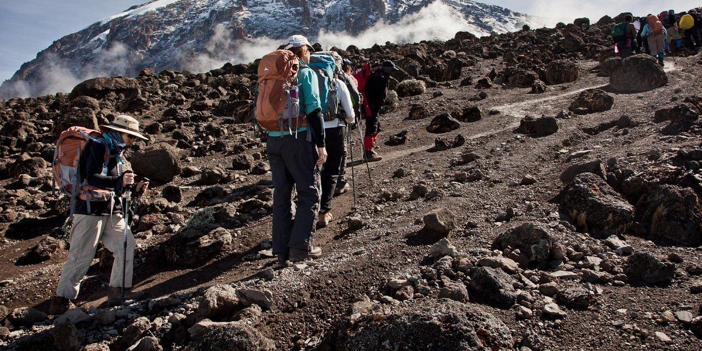

7 Days Umbwe Route

About this route
The Umbwe route is a short, steep and direct route. It is considered very difficult and is the most challenging way up Mount Kilimanjaro. Because the ascent is so quick, Umbwe does not provide the stages needed for altitude acclimatisation. Traffic on the route is very low, but the chances of success are low too. It is offered at a minimum of six days, and seven days is recommended. Umbwe should only be attempted by very strong hikers who are confident in their ability to acclimatise. Overall, however, we do not recommend the Umbwe route and we discourage clients from using it.
Itinerary
Day 1: Umbwe Gate (1,800 m) to Cave Bivouac Camp (2,850 m)
At 8 am you leave Moshi for Umbwe Gate, where you meet the porters, guides and cooks who will trek with you to Uhuru Peak, the roof of Africa. You wait at the gate while the climb is registered and the crew make their final preparations. Your first destination, Cave Bivouac Camp, is about 6 hours from the gate. The trail is steep and can be slippery in places. You hike through the moss-covered trees of Kilimanjaro’s cloud forest, which thins later in the day as heathers, tall grasses and wildflowers come into view. Porters and cooks walk ahead to set up camp before you arrive.
Elevation gain: 1,050 m / 3,445 ftHiking time: 4 to 6 hoursMeals: Breakfast, lunch and dinnerDay 2: Cave Bivouac (2,850 m) to Barranco Camp (3,950 m)
The first section of the trail follows the ridge. After leaving the forest you continue across open moorland to Barranco Camp. Barranco is generally regarded as the most scenic campsite on the Umbwe trail, surrounded by giant senecios and lobelias. Because it sits in a valley, the sun rises later here than at other camps.
Elevation gain: 1,100 m / 3,610 ftHiking time: 5 to 7 hoursMeals: Breakfast, lunch and dinnerDay 3: Barranco Camp (3,900 m)
An extra day for acclimatisation. Adding this day eases the effort and improves your acclimatisation.
Meals: Breakfast, lunch and dinnerDay 4: Barranco Camp (3,950 m) to Karanga Valley (4,200 m)
After breakfast you leave Barranco Camp for Karanga Valley. The day begins with a 1.5-hour scramble up the Barranco Wall, the hardest part of the day, where you may need your hands in places. At the top you cross fairly level ground before a short, steep descent into the green Karanga River valley.
Elevation gain: 250 m / 820 ftDistance: 7 kmHiking time: 3 to 5 hoursMeals: Breakfast, lunch and dinnerDay 5: Karanga Valley (4,200 m) to Barafu Camp (4,600 m)
After breakfast you hike to Barafu Camp. On the way you see several of Kibo’s glaciers, including the Heim, Kersten and Decken glaciers, and the junction where the Mweka descent route meets the Machame trail. The trail crosses alpine desert with little vegetation, but Barafu Camp has stunning views of Kibo and Mawenzi. Try to sleep after dinner, because you will be woken before midnight for the summit hike.
Elevation gain: 400 m / 1,320 ftDistance: 6 kmHiking time: 3 to 5 hoursMeals: Breakfast, lunch and dinnerDay 6: Barafu Camp (4,600 m) to Uhuru Peak (5,895 m), then Mweka Camp (3,100 m)
Around midnight you begin the final ascent, hiking by headlamp for the next six hours. The climb to the crater rim is the most challenging part of the whole trek, and the trail is very steep until you reach Stella Point. From Stella Point to Uhuru Peak the climb is gradual and not very difficult, but the altitude makes it long and tiring. The crater rim hike takes about an hour. At Uhuru, take photos of your guide and group before starting down to Mweka Camp, enjoying views of the mountain, crater, clouds and glaciers on the way. At Barafu Camp you eat breakfast and take a short break, with another three to five hours still to go to Mweka Camp.
Elevation gain: 1,295 m / 4,240 ftElevation loss: 2,795 m / 9,170 ftHiking time: 6 hours to the rim, 1 hour to Uhuru, 3 to 4 hours back to Barafu, 4 hours to MwekaMeals: Breakfast, lunch and dinnerDay 7: Mweka Camp (3,100 m) to Mweka Gate (1,500 m)
After breakfast you finish the trek with a hike through the forest to Mweka Gate. The trail may be slippery after rain. Our vehicles meet you at the lower station of Mweka Gate and take you back to Moshi.
Elevation loss: 1,600 m / 5,250 ftHiking time: 4 hoursMeals: Breakfast
At a glance
- Duration
- 7 days
- Route
- Umbwe, from Umbwe Gate
- Summit
- Uhuru Peak, 5,895 m
- Finish
- Mweka Gate, then Moshi
- Difficulty
- Very difficult
Included in the price
- Private transport between Kilimanjaro International Airport and your accommodation in Moshi
- 2 nights of accommodation in Moshi
- Transport to and from the Kilimanjaro gate
- Park entry fees, camping fees and Team Kilimanjaro rescue fees
- 18% VAT on tour fees and services
- 4-season mountain tents and double-layered sleeping mats
- Friendly, professional mountain guides, cook and porters
- 3 hot meals a day on the mountain
- Enough treated and filtered drinking water throughout the trek, and hot water for washing
- Fair wages for the mountain crew, as approved by KINAPA and KIATO
- Government taxes
- Portable oxygen tanks and oximeter
- Emergency first-aid kit
Not included
- Lunches, dinners and drinks at your hotel before and after the climb
- Travel insurance
- Flights
- Laundry (available at the hotel)
- Personal items and toiletries
- Tips for guides, porters and cook
- Portable flush toilet with a toilet tent: US$70 for the entire trek, on request